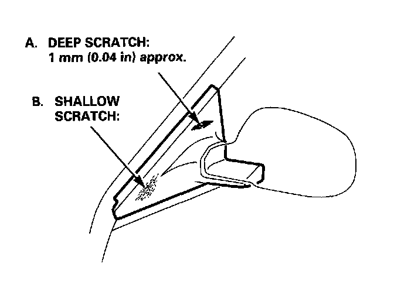

Repair Procedures
Repair Procedures
A. Deep scratches:
1. Sand the damaged section. (#180, #240)
2. Spray it with primer and let it dry.
NOTE: When the base material is exposed.
3. Coat with primer surfacer.
4. Dry the primer surfacer, then sand. (#240, #400)
5. Apply polyester resin filler.
6. Let the polyester filler dry, then sand. (#240,# 320)
7. Coat it with primer surfacer.
8. Dry the primer surfacer, then sand. (#400, #600)
9. Apply top coating.
B. Shallow scratches:
Not down to the base material:
1. Sand to coat. (#400, #600)
2. Apply top coating.
NOTE: Coat with primer surfacer when the base material is exposed.
C. Replacement part:
1. Apply the intermediate coat (gray).
Sand both sides of the part. (#400, #600)
2. Dry the primer surfacer, then sand. (#400, #600)
3. Apply the top coating.
-1. Metallic enamel + clear coat.
-2. Solid color enamel + clear coat.
-3. Pearl enamel + clear coat.